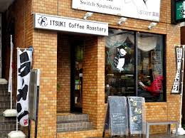
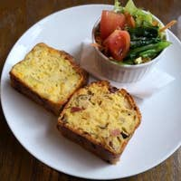
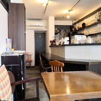
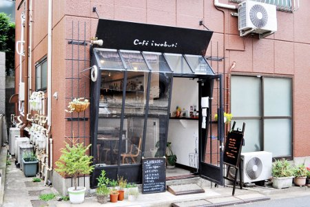

カフェの魅力
コーヒーは私達の生活を豊かにしています。
美味しい食事の後、コーヒーを一杯作って、新聞を読んだり、
恋人や友達や家族と一緒に温かい時間と楽しみを共有したりするのは幸せです。
ここではそんな体験ができる、東中野のおすすめカフェを紹介しています。
ITSUKI Coffee Roastery
- お店の内装は木と緑を感じられるように、木材のカウンター・テーブルと 柔らかい空色の壁紙やプランターで表現している。
- 店内では焙煎機によるローストと、
挽きたてのコーヒーの香りが常に感じられる。

場所確認(地図)はこちらから
★所在地：東京都中野区４ 東中野４丁目４-３山内ビル山内マンション １ 階
★営業時間：平日8:00～20:00
土曜日9:00～19:00
★定休日：木曜日
★電話：03-5937-5757
ジャックと豆の木
★所在地：東京都中野区東中野４丁目２-１ 佐野ビル1F
★営業時間：8:00~20:00
★定休日：火曜日
★電話：03-3367-4430
COFFEE BAR GALLAGE
★所在地：東京都中野区東中野３丁目８-５ 遠田ビル 201
★営業時間：14:00~23:00
★定休日：月曜日
★電話：080-3571-8587
カフェ イワブチ
- 
- ベーコンやチーズ、
野菜などを練りこんだ塩味の
ケーク・サレや焼き菓子が
おすすめ。 - 
- 手作りスイーツやアルコール類も提供。ナチュナルな店。
ランチやディナーなどたくさんメニューがあり、ゆったりと落ち着ける。

場所確認(地図)はこちらから
★所在地：東京都中野区東中野1-52-2 メゾントキワ102
★営業時間：11:00~22:00
★定休日：火曜日、水曜日
★電話：070-6520-1755
Coffee stand 早川亭
★所在地： 東京都中野区東中野１丁目15-7
★営業時間：11:00~19:00
★定休日：月曜日、第2・4火曜日
★電話： 03-6908-8528